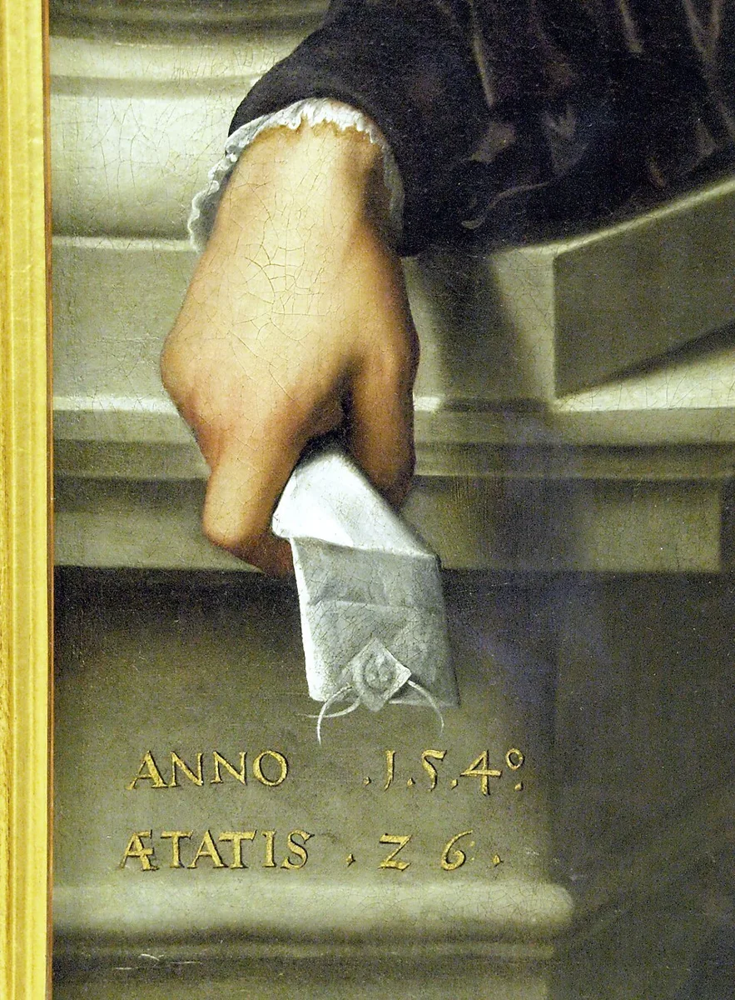

Letterlocking
Open a three-panel letter model and track the address face as the packet becomes a flat sheet.
Inspect source image

Open a three-panel letter model and track the address face as the packet becomes a flat sheet.
